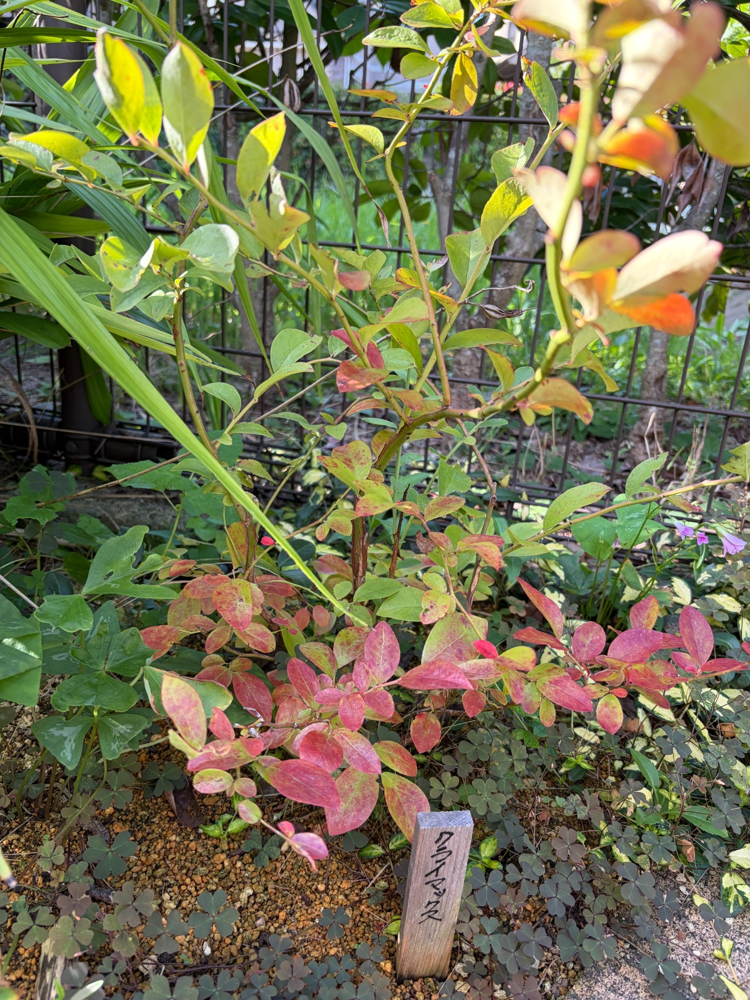

2026/09/22 赤く色づいた葉が目立つクライマックス。収穫後の枝葉の様子
9月5日の記録から17日がたちました。庭のクライマックスは、緑色の葉を残しながら、赤色や赤紫色の葉が目立つ姿になっています。
特に目を引くのは、株の下の方から横へ広がる枝です。赤く色づいた葉が重なり、緑色や黄緑色の葉と入り交じっています。上へ伸びる枝には緑の葉も残っていて、株全体が同じ色に変わっているわけではありません。
今年はクライマックス、プレミア、メンデイトの3品種とも実をつけ、収穫したブルーベリーをヨーグルトに混ぜておいしくいただきました。実の写真は撮れませんでしたが、苗を迎えてから初めての収穫を楽しめたことは、うれしい出来事でした。
収穫の後も、庭での生育は続いています。今回は、9月下旬を迎えたクライマックスの葉の色や枝の様子を残しておきます。
9月5日から続く、収穫後のクライマックス
前回の9月5日にも、クライマックスには緑色や黄緑色の葉に交じって、赤みを帯びた葉がありました。黄色みの強い葉や斑点のある葉も見られ、夏を過ごした株の姿を記録しました。
今回もその色の混じり方は続いていますが、写真では下の枝にまとまってついた赤い葉が、ひときわ目立ちます。一枚の葉の一部だけが赤いものもあれば、葉全体が赤色や赤紫色に近くなっているものもあります。
撮影した角度や日差しが違うため、17日間でどのくらい赤い葉が増えたのかを、正確に比べることはできません。それでも、前回から気になっていた葉色の変化を、今回も続けて見ることができました。
収穫できたことに喜んでいたところから、今度は実を採った後の枝葉へと目が向いています。果実のある時期だけでなく、その後の姿も残していくことで、わが家のクライマックスの一年が少しずつつながっていきます。
下の枝では、赤色や赤紫色の葉が目立ちます
株元に近いところから横へ伸びる枝には、赤く色づいた葉がまとまっています。写真の手前側では、赤色、赤紫色、少し桃色がかったように見える葉が重なり、同じ赤でも一枚ずつ色合いが違います。
葉全体がほぼ赤く見えるものもあれば、中央に緑色を残して周囲が赤くなっているものもあります。黄緑色の地に赤い色がまだらに混じる葉もあり、一度に同じように色づくわけではないことが分かります。
赤い葉の間には、まだ緑色の葉も残っています。そのため、下の枝だけを見ても、色がすっかりそろっているわけではありません。緑から黄色、赤へと単純に並ぶというより、いくつもの色が同じ枝の中に交じっている姿です。
冬に苗を迎えたときにも、クライマックスには赤く色づいた葉がありました。今回の赤い葉を見ると、そのときの姿も思い出します。ただ、植え付け前の12月と、夏を越した9月では季節も株の置かれた状況も違います。色が似ているだけで、同じ状態だとは考えずに見ていきたいと思います。
上の枝には、緑色や黄緑色の葉が残っています
下の枝の赤さに対して、上へ伸びる枝では緑色や黄緑色の葉が目につきます。黄色みを帯びた葉もありますが、下の方ほど赤色ばかりが目立つわけではありません。
一つの株の中で、枝の位置によってこれほど色の印象が違うのは興味深いところです。下の葉だけを見ると全体が赤くなったように感じますが、視線を上へ移すと、まだ緑を残している部分があります。
葉によって日光の当たり方や向きも違い、手前の明るい葉と奥の陰になった葉では、色の見え方も変わります。写真の色だけで細かな違いを決めつけず、株全体の中でどの枝にどんな葉が残っているのかを見ていきたいです。
今の姿は、株全体が一斉に同じ変化をしているというより、枝や葉ごとの違いが表れているように感じます。これから上の緑の葉も赤くなるのか、緑を残したまま落ちる葉があるのか、その違いも気になります。
赤い葉の美しさと、葉の状態は分けて見ていきます
赤く色づいた葉はきれいですが、近くで見ると、葉の表面には細かな斑点や色むらもあります。葉先や縁が褐色になっているものもあり、どの葉も傷みのない状態というわけではありません。
前回にも斑点や葉先の傷みが見られました。今回も似た特徴が残っているので、葉の赤さだけに目を向けず、その中にどんな傷みがあるのかも見ておきたいと思います。
9月下旬という時期からは秋への変化を思い浮かべますが、赤くなった葉をすべて季節の紅葉として受け止めてよいのかは、まだ分かりません。夏を過ごした後の葉でもあり、葉色だけから株の調子を判断するのは難しいと感じます。
今の段階では、赤く色づいたことだけで弱ったと決めつけることも、きれいだから心配がないと考えることもせず、緑の葉の残り方や枝の状態と合わせて見ていきます。
この先、褐色の部分が広がるのか、葉がそのまま残るのか、どの枝から葉が落ちていくのか。次に見るときには、赤い色の変化とともに、そうしたところにも目を向けたいです。
上へ伸びる枝と、横へ広がる枝
枝ぶりを見ると、株元から上へ伸びる枝と、低い位置から横へ広がる枝があります。中央には比較的まっすぐ立ち上がる枝があり、その周りに細い枝がいくつも伸びています。
下の方では、枝が左右へ広がり、その先に赤く色づいた葉がついています。縦に伸びる枝と横に伸びる枝が組み合わさり、株の高さだけでなく、足元にも広がりのある姿になっています。
枝の色にも違いがあります。緑色の部分、赤みを帯びた部分、褐色に見える部分があり、葉の色と同じように、株の中で一様ではありません。
葉が続いてついている枝もあれば、葉と葉の間が空いて、枝の線がよく見えるところもあります。上の方の枝と、赤い葉が重なる下の枝では、茂り方の印象も違います。
前回の写真とは枝の重なり方が違うため、伸びた長さや枝数の増減までは分かりません。今回は、上へ伸びる枝を残しながら、下の枝が横へ広がっている姿を、9月22日の枝ぶりとして残しておきます。

周りの緑の中で、クライマックスの赤い葉が目を引きます
クライマックスの周囲には、細長い葉を伸ばす植物や、地面を覆う小さな植物があります。背景の緑と重なる中で、手前の赤い葉がよく目立っています。
上の方では周囲の細長い葉が交差し、クライマックスの枝に重なっています。緑が多く見える場所でも、すべてがクライマックスの葉ではありません。丸みのある葉と、それにつながる枝をたどると、株の形が少しずつ見えてきます。
株元には、植え付けたときからの木製の名札があります。周囲の植物が茂る中でも、「クライマックス」の名前が、この株を育て始めた場所を教えてくれています。
昨年12月に植え付けたときの姿から、夏の収穫、そして今回の赤い葉へ。名札のある同じ場所で、季節ごとの姿を残せることが、生育記録を続ける楽しみになっています。
初めての収穫を楽しんだ株を、これからも見守ります
昨年12月16日に地植えしてから、約9か月がたちました。冬に迎えた苗が季節を越し、今年は実をつけてくれました。プレミア、メンデイトとともに、3品種それぞれから収穫を楽しめたことが、今年のブルーベリー栽培のうれしい出来事です。
収穫した実をヨーグルトに混ぜて食べたときには、自分の庭で育てたものをいただく楽しさを感じました。実の写真を残せなかったことは心残りですが、その経験は、これからも育てていきたいと思う励みになっています。
今は果実から葉へと、眺めるところが変わりました。下の枝には赤色や赤紫色の葉が目立ち、上の枝には緑色や黄緑色の葉が残っています。斑点や葉先の傷みも含めて、これが初めての夏を越したクライマックスの、今の姿です。
収穫できたからといって、その後も順調だと決めつけず、葉が赤くなったからといって、すぐに弱ったとも決めつけずに見ていきたいと思います。葉の色、残り方、枝ぶりを続けて記録することで、この株の季節ごとの変化を知っていけたらと思います。
2026年9月22日。緑と赤の葉が入り交じるクライマックスを、これからも庭の中で見守っていきます。